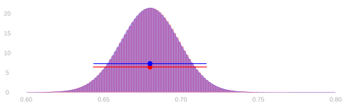

21 Variance, Standard Deviation, and Sample Size
$$ \newcommand{X}{} \newcommand{Y}{}
$$
Variance and Standard Deviation
Properties of Expectations: Factorization of Products
\[ \mathop{\mathrm{E}}[YZ] = \mathop{\mathrm{E}}[Y]\mathop{\mathrm{E}}[Z] \qqtext{when $Y$ and $Z$ are independent} \]
The expectation of a product of independent random variables is the product of their expectations.
Definition. Random variables are independent if their joint probability distribution is the product of their individual marginal ones. When we sample with replacement, the responses to our calls are independent. When we sample without replacement, they’re not independent.
Lack of independence isn’t necessarily a bad thing. It’s why sampling without replacement gives us better precision. But it can make some calculations, e.g. for the standard deviation of a mean, a bit more complicated.
It does not make calculating the expectation of a mean any harder. Why not? Because linearity of expectation doesn’t require independence.
Proof
\[ \begin{aligned} \mathop{\mathrm{E}}[YZ] &= \sum_{yz} yz \ P(Y=y, Z=z) && \text{by definition of expectation} \\ &= \sum_y \sum_z yz \ P(Y=y) P(Z=z) && \text{factoring and ordering sums } \\ &= \left\{ * \right\}{\sum_y y \ P(Y=y)} \left\{ * \right\}{\sum_z z \ P(Z=z)} && \text{pulling factors that don't depend on $z$ out of the inner sum} \\ &= \mathop{\mathrm{E}}[Y] \mathop{\mathrm{E}}[Z] && \text{by definition of expectation} \end{aligned} \]
The Standard Deviation of a Proportion: Sampling with Replacement
We’ve worked out the variance (i.e. the squared standard deviation) of a binary random variable.
\[ \mathop{\mathrm{\mathop{\mathrm{V}}}}[Y] = \theta(1-\theta) \qqtext{ when } Y = \begin{cases} 1 & \qqtext{ with probability } \theta \\ 0 & \qqtext{ with probability } 1-\theta \end{cases} \]
When we sample uniformly at random, our sample proportion is the mean of \(n\) independent variables like this.
\[ \mathop{\mathrm{\mathop{\mathrm{V}}}}[\hat\theta] = \mathop{\mathrm{\mathop{\mathrm{V}}}}\sb*{\frac1n \sum_{i=1}^n Y_i} = \mathop{\mathrm{E}}\sb*{ \left\{ * \right\}{ \frac1n \sum_{i=1}^n Y_i - \mathop{\mathrm{E}}\sb*{\frac1n \sum_{i=1}^n Y_i} }^2 } = \frac{\theta(1-\theta)}{n} \]
We can calculate it in four steps. Let me walk through them one at a time.
Step 1. Centering each term. We can push the subtraction inside the sum.
\[ \mathop{\mathrm{\mathop{\mathrm{V}}}}[\hat\theta] = \mathop{\mathrm{E}}\sb*{ \left\{ * \right\}{ \frac1n \sum_{i=1}^n Y_i - \mathop{\mathrm{E}}\sb*{\frac1n \sum_{i=1}^n Y_i} }^2 } = \mathop{\mathrm{E}}\sb*{ \left\{ * \right\}{ \frac1n \sum_{i=1}^n \p*{Y_i - \mathop{\mathrm{E}}[Y_i]} }^2 } \]
Step 2. Squaring out the sum. When we square a sum, we get a double sum of products.1
\[ \mathop{\mathrm{E}}\sb*{ \left\{ * \right\}{ \frac1n \sum_{i=1}^n \p*{Y_i - \mathop{\mathrm{E}}[Y_i]} }^2 } = \mathop{\mathrm{E}}\sb*{ \frac{1}{n^2} \sum_{i=1}^n \sum_{j=1}^n \p*{Y_i - \mathop{\mathrm{E}}[Y_i]}(Y_j - \mathop{\mathrm{E}}[Y_j]) } \]
Step 3. Distributing the expectation. Linearity lets us move the expectation inside.
\[ \mathop{\mathrm{E}}\sb*{ \frac{1}{n^2} \sum_{i=1}^n \sum_{j=1}^n \p*{Y_i - \mathop{\mathrm{E}}[Y_i]}(Y_j - \mathop{\mathrm{E}}[Y_j]) } = \frac{1}{n^2} \sum_{i=1}^n \sum_{j=1}^n \mathop{\mathrm{E}}\sb*{ \p*{Y_i - \mathop{\mathrm{E}}[Y_i]}(Y_j - \mathop{\mathrm{E}}[Y_j]) } \]
Step 4. Taking the expectation term-by-term. Now we evaluate \(\mathop{\mathrm{E}}[(Y_i - \mathop{\mathrm{E}}[Y_i])(Y_j - \mathop{\mathrm{E}}[Y_j])]\) for each pair \((i,j)\). There are two cases.
When \(j=i\), we have \(\mathop{\mathrm{E}}[(Y_i - \mathop{\mathrm{E}}[Y_i])^2] = \mathop{\mathrm{\mathop{\mathrm{V}}}}[Y_i] = \theta(1-\theta)\).
When \(j \neq i\), we use independence. Because \(Y_i\) and \(Y_j\) are independent, the expectation of their product is the product of their expectations. And each factor has mean zero: \(\mathop{\mathrm{E}}[Y_i - \mathop{\mathrm{E}}[Y_i]] = 0\). So the whole thing is zero.
\[ \frac{1}{n^2} \sum_{i=1}^n \sum_{j=1}^n \begin{cases} \theta (1-\theta) & \text{ when } j=i \\ 0 & \text{ when } j \neq i \end{cases} = \frac{1}{n^2} \sum_{i=1}^n \theta(1-\theta) = \frac{\theta(1-\theta)}{n} \]
Conclusion
The variance of our mean is \(1/n\) times the variance of one observation.
\[ \mathop{\mathrm{\mathop{\mathrm{V}}}}\sb*{\frac1n\sum_{i=1}^n Y_i} = \frac{\mathop{\mathrm{\mathop{\mathrm{V}}}}[Y_1]}{n} \]
So the standard deviation of our mean is \(1/\sqrt{n}\) times the standard deviation of one observation.
\[ \mathop{\mathrm{sd}}\sb*{\frac1n\sum_{i=1}^n Y_i} = \frac{\mathop{\mathrm{sd}}[Y_1]}{\sqrt{n}} = \sqrt{\frac{\theta(1-\theta)}{n}} \]
The Standard Deviation of a Proportion: Sampling without Replacement
When we sample without replacement, the calculation is almost the same. Steps 1–3 go through unchanged. The difference is in Step 4.
\[ \mathop{\mathrm{\mathop{\mathrm{V}}}}[\hat\theta] = \mathop{\mathrm{\mathop{\mathrm{V}}}}\sb*{\frac1n \sum_{i=1}^n Y_i} = \frac{\theta(1-\theta)}{n} \times \frac{m-n}{m-1} \]
When \(j=i\), we still get \(\mathop{\mathrm{\mathop{\mathrm{V}}}}[Y_i] = \theta(1-\theta)\).
When \(j \neq i\), we can no longer factor the expectation—our observations aren’t independent. Instead, we get a small negative term. Why negative? Because if your first call reached a 1, there’s one fewer 1 in the population, so your second call is slightly less likely to reach a 1. This negative covariance is why sampling without replacement gives us better precision.
The covariance works out to \(\mathop{\mathrm{E}}[(Y_i - \mathop{\mathrm{E}}[Y_i])(Y_j - \mathop{\mathrm{E}}[Y_j])] = -\frac{\theta(1-\theta)}{m-1}\) when \(j \neq i\). We’ll leave deriving this for homework.
With this in hand, we can finish the calculation. There are \(n\) diagonal terms (when \(j=i\)) and \(n(n-1)\) off-diagonal terms (when \(j \neq i\)).
\[ \begin{aligned} \mathop{\mathrm{\mathop{\mathrm{V}}}}[\hat\theta] &= \frac{1}{n^2} \left\{ * \right\}{ n \cdot \theta(1-\theta) + n(n-1) \cdot \left\{ * \right\}{-\frac{\theta(1-\theta)}{m-1}} } \\ &= \frac{\theta(1-\theta)}{n} \left\{ * \right\}{1 - \frac{n-1}{m-1}} = \frac{\theta(1-\theta)}{n} \times \frac{m-n}{m-1} \end{aligned} \]
Sample Size Calculation
We’ve been doing a lot of math. Now let’s put it to use.
Remember the question that motivated all this: the bootstrap tells us what we’ve learned after we have data, but how do we reason about what we can learn before we have data? Now that we have formulas for the standard deviation of a sample proportion, we can answer questions like: how big a sample do I need to get a confidence interval of a given width?
An Interval for Turnout in 2020
Let’s compare our two approaches to calibration in our turnout poll.
\[ \begin{aligned} \textcolor{red}{\text{binomial interval}} &= 0.6800 \pm 0.0368 \\ \textcolor{blue}{\text{normal interval}} &= 0.6800 \pm 0.0366 \end{aligned} \]
We have to go out to 4 digits, way beyond what’s statistically meaningful, to see any difference in these intervals. Our interval estimate—either one—is telling you might be off by a few hundredths. Who cares about another couple ten-thousandths at the edge of the interval?
Thinking Speculatively About Intervals
Suppose we’re not satisfied with this level of precision, so we’re going to collect more data. Suppose we want our interval to be \(\pm .01\) instead of \(\pm 0.037\). How many people, in total, do we need to call? We can use the normal approximation to figure that out.
\[ \hat \theta \pm 1.96\sigma \qfor \sigma = \sqrt{\frac{\theta (1-\theta)}{n}} \qqtext{ is } \hat\theta \pm .01 \qqtext{if} 1.96\sqrt{\frac{\theta (1-\theta)}{n}} = .01 \]
Now all we have to do is solve for \(n\). And, since we don’t know \(\theta\), use our best guess, \(\hat\theta=0.68\).
\[ n = \frac{1.96^2 \ \hat\theta (1-\hat\theta)}{.01^2} \approx 8000 \]
The Easy Version
There’s a trick to this. Let’s compare the interval width we have to the one we want.
\[ \begin{aligned} \pm 0.037 &= \pm 1.96\sqrt{\frac{\hat\theta (1-\hat\theta)}{625}} \\ \pm 0.01 &= \pm 1.96\sqrt{\frac{\hat\theta (1-\hat\theta)}{n}} \end{aligned} \]
All that changes in this formula is the sample size. And the sample size ratio falls out of the interval width ratio.
\[ \frac{0.037}{.01} = \frac{1.96\sqrt{\frac{\hat\theta (1-\hat\theta)}{625}}}{1.96\sqrt{\frac{\hat\theta (1-\hat\theta)}{n}}} = \sqrt{\frac{n}{625}} \qqtext{ so } n = 625\left(\frac{0.037}{.01}\right)^2 \approx 8000 \]
To get the new sample size, multiply the sample size we have by the square of the desired ratio of the interval widths. To double precision, quadruple the sample size. To triple it, increase it 9x. To get another digit, i.e. increase precision 10x, increase the sample size 100x.
Starting from Scratch
What do we do if we don’t have any data yet? Then we don’t have a ‘current interval width’ to compare to the ‘desired interval width’. And we don’t have a sample proportion \(\hat\theta\) to plug in for the population proportion \(\theta\).
But we can still use the formula we worked out earlier to get somewhere.
\[ n = \frac{1.96^2 \ \theta (1-\theta)}{.01^2} \]
We don’t have an estimate of \(\theta\), but we do know it’s between 0 and 1. And, consequently, so is \(\theta(1-\theta)\). So we know that if we just substitute \(1\) into our formula, we’ll get a number that’s bigger than we need.
\[ n < n' = \frac{1.96^2 \cdot 1}{.01^2} \approx 38400 \]
That’s a bit excessive. In fact, we can substitute in \(1/4\) instead of \(1\).
\[ n < n' = \frac{1.96^2 \cdot 1/4}{.01^2} \approx 9600 \]
Much better. That’s pretty close to the number we got with preliminary data.
Why Can We Use 1/4?

Here’s the claim. Why is it true?
\[ n := \frac{1.96^2 \ \theta (1-\theta)}{.01^2} < n' := \frac{1.96^2 \ \times 1/4}{.01^2} \]
Because \(1/4\) is the biggest \(\theta (1-\theta)\) gets for \(\theta \in [0,1]\). And it happens, for what it’s worth, when \(\theta = 1/2\). That is, we’ll have the least precision—at a given sample size—when the proportion we’re estimating is 1/2.
Appendix
Nothing here will show up on an exam.
Squaring Sums
\[ \left\{ * \right\}{\sum_{i=1}^n Z_i}^2 = \sum_{i=1}^n \sum_{j=1}^n Z_i Z_j \]
This is a generalization of the identity \((a+b)^2 = a^2 + 2ab + b^2\) to more terms. You may be so used to that you don’t even think about what’s really happening. Here’s a version where I’m very explicit: it’s a product of two copies of \((a+b)\): one pink and one teal.
\[ (a+b)^2 = \textcolor[RGB]{239,71,111}{(a+b)}\textcolor[RGB]{17,138,178}{(a+b)} = \textcolor[RGB]{239,71,111}{a}\textcolor[RGB]{17,138,178}{a} + \textcolor[RGB]{239,71,111}{a}\textcolor[RGB]{17,138,178}{b} + \textcolor[RGB]{239,71,111}{b}\textcolor[RGB]{17,138,178}{a} + \textcolor[RGB]{239,71,111}{b}\textcolor[RGB]{17,138,178}{b} = a^2 + 2ab + b^2 \]
How do we generalize this to more terms? We’ll use the same color-coded-copies trick. It helps to count out the terms in our pink copy using \(i\) and in our teal copy using \(j\).2 When we multiply out our sums, we get a product term for each pair of terms in the sum. Each product term involves one term in the pink sum and one term in the teal one.
\[ \left\{ * \right\}{\sum_{i=1}^n Z_i}^2 = \textcolor[RGB]{239,71,111}{\sum_{i=1}^n Z_i} \textcolor[RGB]{17,138,178}{\sum_{j=1}^n Z_j} = \textcolor[RGB]{239,71,111}{\sum_{i=1}^n} \textcolor[RGB]{17,138,178}{\sum_{j=1}^n} \textcolor[RGB]{239,71,111}{Z_i} \textcolor[RGB]{17,138,178}{Z_j} \]
See Section 24.1 if this is unfamiliar.↩︎
If we used \(i\) to count terms in both sums, we’d wind up with two different things we call \(i\): one pink and one teal. We could get by saying ‘pink \(i\)’ and ‘teal \(i\)’ in class, but people you meet later on would probably get confused if you talk this way. Using \(i\) and \(j\) is conventional.↩︎